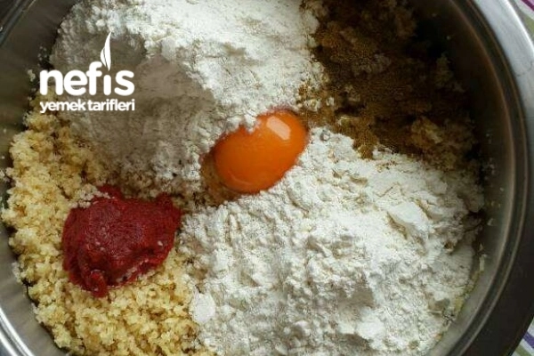
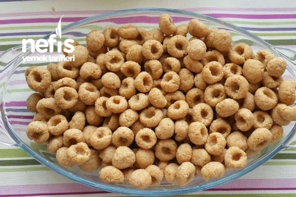
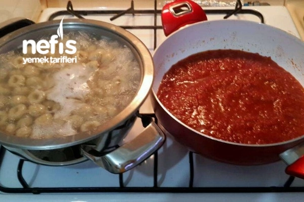
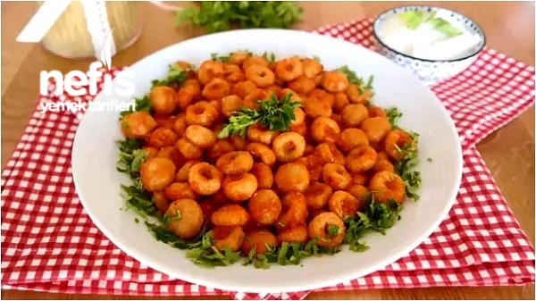

Fellah Köftesi Tarifi Nasıl Yapılır?
Bulgur sıcak su ile ıslatılır ve şişmesi için 10 dk bekletilir.
Şişen bulgura un, yumurta, salça ve baharatlar eklenerek yoğurulur.
Küçük küçük yuvarlanan bulgurların üzerine serçe parmak batırılarak şekil verilir.
Bir tencerede köfteler 15- 20 dk kaynatılır.
Köfteler haşlanırken ayrı bir tencerede domates sosu hazırlanır.
Haşlanan köfteler sosla birleştirilir. Servis tabağına alınır.
Fellah Köftesi Tarifi Fotoğraflı Yapılışı
Malzemeleri yogurma kabina alin

Koftelere sekil verin

Sosu Hazirlayin

Fellah Koftemiz Hazir :)
